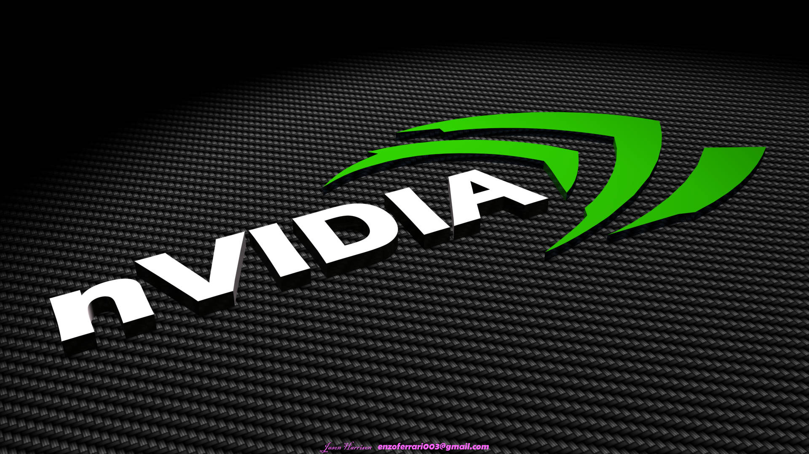

Jogos
Novidade nos jogos
A NVIDIA anunciou na Gamescom 2025 que vários jogos usarão a tecnologia DLSS 4 com ray tracing e path tracing para melhorar drasticamente os gráficos. Alguns desses títulos chegarão por meio do serviço de nuvem GeForce NOW.